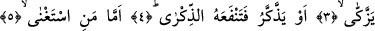
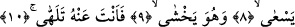
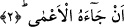

YÜZÜNÜ EKŞİTTİ VE ÇEVİRDİ
Bismillâhirrahmânirrahîm
1. (Peygamber) Yüzünü ekşitti ve çevirdi.
2. Yanına a’mâ geldi diye
3. (Rasûlüm onun hâlini) sana kim bildirdi? Belki o temizlenecekti.
4. Yahut öğüt alacak da o öğüt ona fayda verecekti.
5. Kendini muhtaç görmeyene gelince
6. Sen ona yöneliyorsun.
7. Oysaki onun temizlenip arınmasından sen sorumlu değilsin.
8-10. Fakat koşarak ve korkarak sana gelenle de ilgilenmiyorsun.
Abese fiilinin masdarı, “el-ubsü ve el-ubûsu” şeklindedir. Anlamı; yüz ekşitmek, surat
asmak, kaş çatmak demektir.
2. Yanına a’ma geldi diye.
Bu cümledeki “hû” zamiri Peygamber Efendimiz’in yerine kullanılmıştır. Bu cümle,
Peygamberimiz’in neden yüz çevirdiğinin sebebini belirtmektedir. Bu açıklama, Basra
ekolüne göredir. Onlara göre “kendisine a’mâ geldi diye” ifâdesi, -âyetin dizilişi
itibariyle- “tevellâ/yüz çevirdi” fiiline yakındır. Buna göre âyet-i kerimeye mânâ
vermemiz gerekirse şöyle deriz: “Kendisine a’mâ, kör bir kimse geldi diye Peygamber
yüzünü asıp çevirdi.”
“el-A’mâ” ve “el-‘amâ” kelimelerinin anlamı “gözü kaybetmek” demektir. Bu
kelimeler aynı zamanda “basiret/kalp gözü”nün kaybedilmesi anlamında da kullanılır.
“el-A’mâ” kelimesinin başındaki “el” takısı ahd içindir. Dolayısıyla burada geçen
a’mâ okuyucu tarafından bilinen bir a’mâdır ki bu kişi Peygamber Efendimiz’in ikinci
müezzini olan İbn Ümm-i Mektum’dur. Bu hususta Peygamberimiz (s.a.) Medinelilere